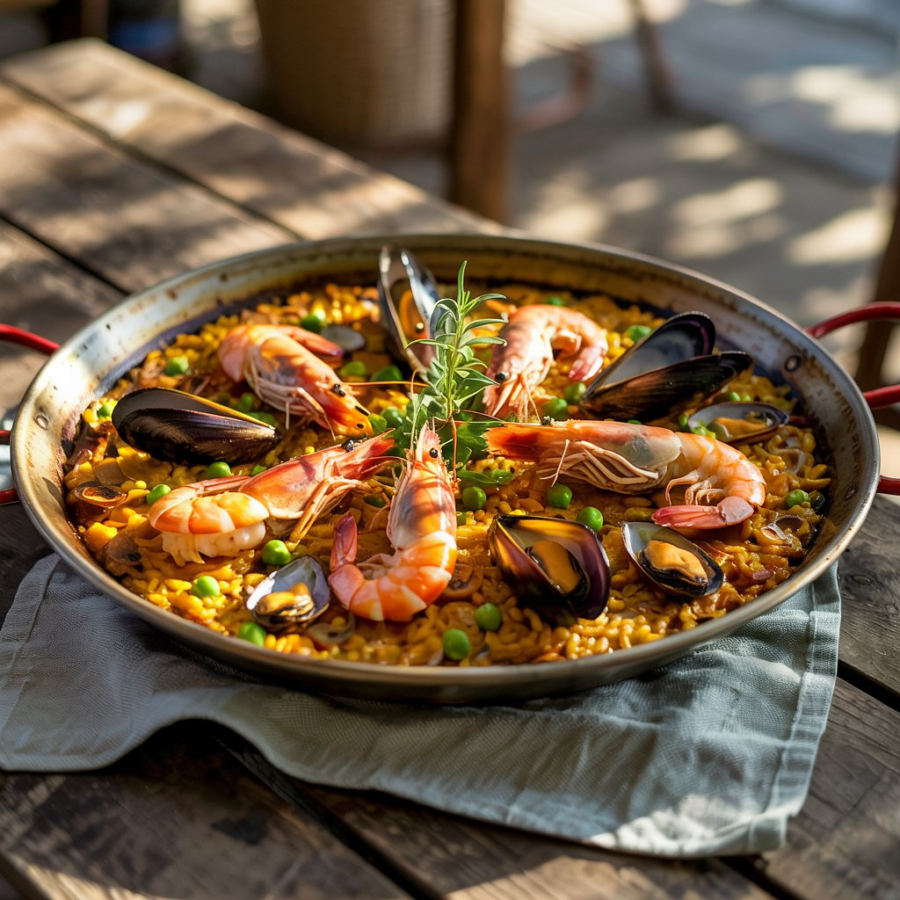

Paella Valenciana

Ingredientes (para 4 personas):
- 400 g de pollo troceado (preferiblemente muslo/contramuslo)
- 300 g de conejo troceado (si no tienes, puedes usar todo pollo)
- 150 g de judía verde plana (en trozos)
- 100 g de garrofó (puede ser congelado o en conserva bien escurrido)
- 3 cucharadas de tomate triturado (unos 80 g)
- 2 dientes de ajo (opcional, picados)
- (Opcional) unas tiras de pimiento rojo para decorar al final
- 1 cucharadita colmada de pimentón dulce
- Unas hebras de azafrán (o colorante alimentario)
- Sal al gusto
- 1 ramita de romero (opcional, pero muy recomendado)
- 280 g de arroz bomba (o arroz redondo)
- 800 ml de caldo de ave (o agua con sal), bien caliente
- Aceite de oliva virgen extra (al gusto, generoso para sofreír)
Preparación:
- Sofríe las carnes: En una paellera de unos 36-40 cm, añade aceite y dora el pollo y el conejo a fuego medio-alto hasta que estén bien doraditos por fuera.
- Añade las verduras: incorpora las judías verdes y sofríelas unos minutos.
- Añade el ajo (si lo usas), el pimentón (fuera del fuego para que no se queme), y después el tomate triturado. Cocina hasta que el tomate esté reducido.
- Agrega el garrofó, mezcla bien y añade el caldo caliente. Sube el fuego.
- Añade el azafrán, ajusta de sal, y pon la ramita de romero si lo deseas. Cocina unos 5-7 minutos a fuego fuerte para que se mezclen bien los sabores.
- Añade el arroz, distribuyéndolo por la paellera sin remover luego. Cocina 8 minutos a fuego fuerte.
- Luego baja a fuego medio y cocina otros 10 minutos más, o hasta que el arroz esté en su punto y el caldo se haya absorbido.
- Para conseguir socarrat, sube el fuego los últimos 1-2 minutos (escucharás el chisporroteo del fondo).
- Retira del fuego y deja reposar 5 minutos tapado con un paño limpio.